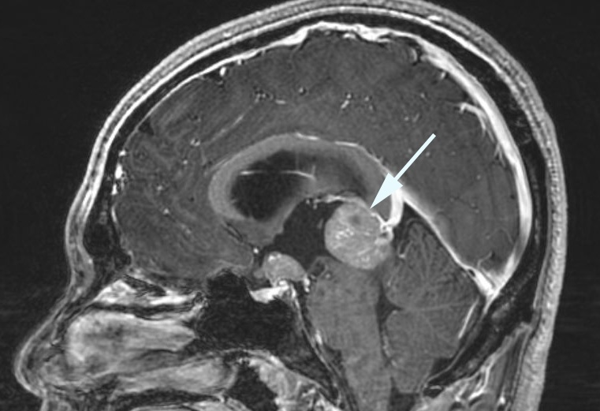

( of )
Correct: 0
Incorrect: 0
This 15 year old boy reported that looking up causes pain around his eyes. Look at his eye movements.
Video Convergence retraction eye movements no audioThe responsible lesion is
Incorrect
Incorrect
Incorrect

Correct! You are looking at convergence retraction of the eyes on attempted upward gaze. The pinealoma